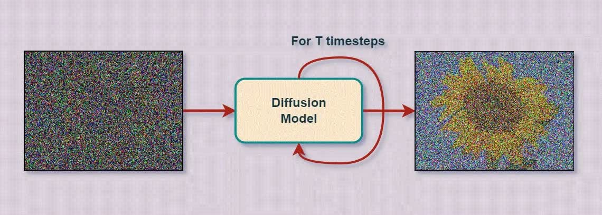
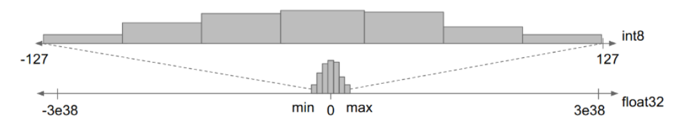
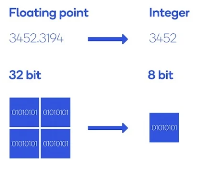

FIRST-AUTHOR RESEARCH · UNDER REVIEW
AgileDP
Quantizing Diffusion Policy via Dynamic Scaling and Selective Distillation
AgileDP-44-bit Diffusion Policy on robot manipulation
ABSTRACT
저비트 환경에서도
로봇의 행동 정보를
보존하는 양자화
Diffusion Policy는 반복적인 denoising으로 높은 성능을 보이지만, 추론 비용과 메모리 사용량이 커 엣지 로봇에 적용하기 어렵습니다. 기존 양자화 방식은 denoising timestep에 따라 달라지는 activation range와 action horizon 내 정보량 차이를 충분히 고려하지 못해 낮은 비트에서 급격한 성능 저하가 발생합니다.
AgileDP는 timestep별 동적 스케일링과 낮은 SNR의 중요한 행동 구간을 선별적으로 학습하는 지식 증류를 결합합니다. 이를 통해 U-Net·Transformer 기반 Diffusion Policy의 저정밀도 성능을 회복하고, 실제 Franka Panda와 Unitree G1 환경에서 효율성을 검증했습니다.
KEY RESULTS
MOTIVATION


METHOD
Temporal-Aware
Dynamic Adaptation
각 denoising timestep의 분포를 조건으로 layer별 양자화 scale을 동적으로 조정해 시간축 분포 변화를 따라갑니다.
Selective Noise-Robust
Distillation
전체 trajectory를 균일하게 증류하지 않고, SNR 관점에서 양자화에 취약한 행동 구간을 선택적으로 보강합니다.

QUALITATIVE RESULTS
AgileDP-44-bit policy result
CITATION
@article{joung2026agiledp,
title={AgileDP: Quantizing Diffusion Policy via Dynamic Scaling and Selective Distillation},
author={Joung, Jiyeon and Kim, Namyoon and Lee, Seungseop and Jang, Keunwoo},
year={2026}
}